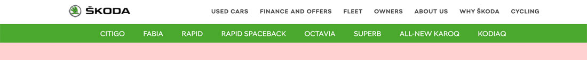
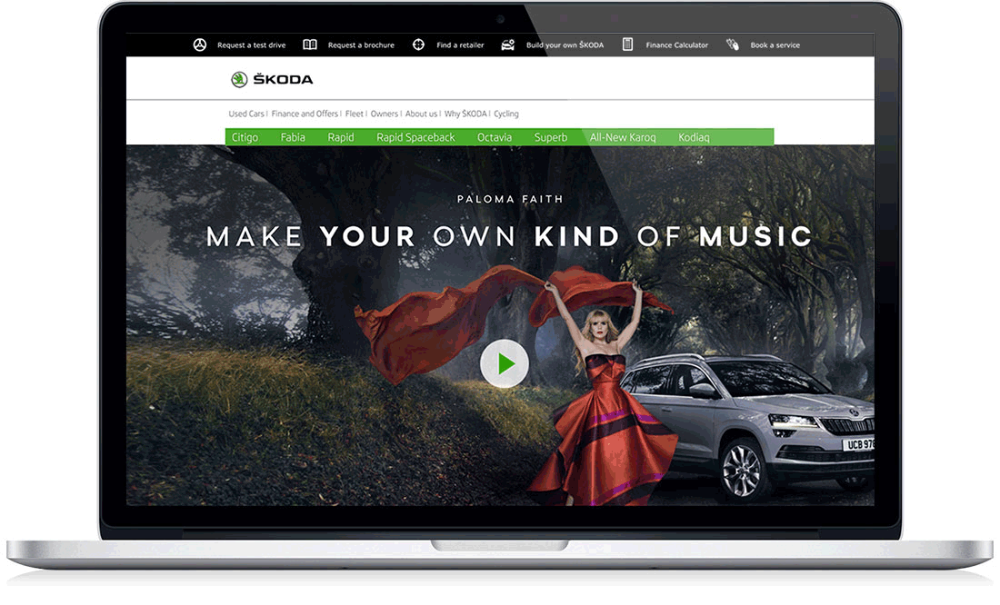

We had the ŠKODA UK account for 12 years, with myself as a lead developer on it for four years. In this time we saw an increase in primary KPIs (Test Drive and. Car Configurator) of over 300% from our UX lead.

ŠKODA have come a long way since being taken over – and subsequently transformed – by the Volkswagen Group, back in 1994. Over the last decade, they have built a brand synonymous with quality, award-winning products and, together with Reading Room, have established a formidable digital platform.
UX / Navigation
Old Navigation: The sharepoint CMS that ŠKODA UK import had templates set up, including the set navigation. We undertook a UX project to make this old navigation more pleasant for users. We were unable to add code to the markup that was set on the page so we had to use a CSS overwrite file to create changes.
New Navigation:The result is; 25% less screen resource used up. Full width looks better. Larger, capitalised updated serif font more AA compliant
CTA Block:We again increased valuable screen resource by removing the black CTA action bar fixed to the top of the screen and added a hover effect right alighed CTA bar. We saw an increase of % in the KPIs.
Related
ŠKODA Pattern Library

A fully responsive set of reviewed and tested webparts that can be used across the seperate desktop and mobile ŠKODA platforms.
Read moreŠKODA Alternative Rich List

The Alternative Rich List features in The Sunday Times. It highlights indivduals who are motivated by more than money by showing people that live the true values of the ŠKODA brand.
Read more